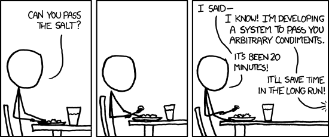

- 00 开篇词 你写的每一行代码，都是你的名片.md.html
- 01 从条件运算符说起，反思什么是好代码.md.html
- 02 把错误关在笼子里的五道关卡.md.html
- 03 优秀程序员的六个关键特质.md.html
- 04 代码规范的价值：复盘苹果公司的GoToFail漏洞.md.html
- 05 经验总结：如何给你的代码起好名字？.md.html
- 06 代码整理的关键逻辑和最佳案例.md.html
- 07 写好注释，真的是小菜一碟吗？.md.html
- 08 写好声明的“八项纪律”.md.html
- 09 怎么用好Java注解？.md.html
- 10 异常处理都有哪些陷阱？.md.html
- 11 组织好代码段，让人对它“一见钟情”.md.html
- 12丨组织好代码文件，要有“用户思维”.md.html
- 13 接口规范，是协作的合约.md.html
- 14 怎么写好用户指南？.md.html
- 15 编写规范代码的检查清单.md.html
- 16丨代码“规范”篇用户答疑.md.html
- 17 为什么需要经济的代码？.md.html
- 18丨思考框架：什么样的代码才是高效的代码？.md.html
- 19 怎么避免过度设计？.md.html
- 20 简单和直观，是永恒的解决方案.md.html
- 21 怎么设计一个简单又直观的接口？.md.html
- 22丨高效率，从超越线程同步开始！.md.html
- 23 怎么减少内存使用，减轻内存管理负担？.md.html
- 24 黑白灰，理解延迟分配的两面性.md.html
- 25 使用有序的代码，调动异步的事件.md.html
- 26 有哪些招惹麻烦的性能陷阱？.md.html
- 27 怎么编写可持续发展的代码？.md.html
- 28 怎么尽量“不写”代码？.md.html
- 29 编写经济代码的检查清单.md.html
- 30丨“代码经济篇”答疑汇总.md.html
- 31 为什么安全的代码这么重要？.md.html
- 32 如何评估代码的安全缺陷？.md.html
- 33 整数的运算有哪些安全威胁？.md.html
- 34 数组和集合，可变量的安全陷阱.md.html
- 35 怎么处理敏感信息？.md.html
- 36 继承有什么安全缺陷？.md.html
- 37 边界，信任的分水岭.md.html
- 38 对象序列化的危害有多大？.md.html
- 39 怎么控制好代码的权力？.md.html
- 40 规范，代码长治久安的基础.md.html
- 41 预案，代码的主动风险管理.md.html
- 42 纵深，代码安全的深度防御.md.html
- 43 编写安全代码的最佳实践清单.md.html
- 44 “代码安全篇”答疑汇总.md.html
- Q&A加餐丨关于代码质量，你关心的那些事儿.md.html
- 结束语 如何成为一个编程好手？.md.html
- 捐赠
19 怎么避免过度设计？
俗话说，“过犹不及”。“过度”这个词仿佛会给我们一些不好的暗示。不要紧张，我们先聊一个轻松的话题。
假设有一个小地方，要建一个火车站。这个地方有数十万人口，每列火车预计上下乘客数十人，高峰时段大概近百人。你会怎么设计这个火车站？
这个火车站可能是个富丽堂皇的建筑，有宽敞的售票厅和候车室。这种设计到处可见，你可以想一想你熟悉的火车站， 也可以观察一下旅途中的火车站。
也有些火车站可能只是一个一百平米左右的小房子，只有简单的售票窗口、进站口和出站口。 比如说北京的清华园火车站，就是这样的。
也有的火车站只有标牌、售票机和遮阳棚的一小块地方，告诉人们火车在这儿停靠，就像我们常见的公交车站。
这三种火车站，都能实现旅客购票、候车、上车和下车的核心需求，帮助他们实现乘车旅行的目的。
既然乘坐火车的核心需求基本是一样的，为什么车站的差别这么大呢？
乘车旅行这个需求，衍生出了购票、候车、上车和下车的需求。
购票的需求衍生出了售票、购票、验票、检票以及各个环节排队的需求。
售票的需求衍生出了要有售票办公室和售票大厅、管理售票人员、购票人员和票贩子的需求。
售票办公室衍生出了科长办公室、科员办公室、会议室、售票窗口。售票窗口的需求也可以接着衍生出更多的需求。这个列表我们可以列很长很长，最后的结果就是火车站的建设耗资大，建设周期长，运营成本高。
哪一种火车站对旅客更方便呢？如果在一个小地方，那么第三种火车站旅客上车的环节最少，是最方便的。而且投资小，建设周期短，运营成本低。
软件开发和建火车站一样，都有设计、建设、运营和维护的环节。该怎么管理好需求和设计，是工程设计者需要重点考虑的问题。
避免需求膨胀
软件开发过程中，最让人痛苦的是什么？如果有这么一个调查的话，“频繁的需求变更”应该是一个高票选项。
频繁的需求变更确实让人抓狂。它变更的可不仅仅只是需求，还有不断重构的代码，不断延长的工期，不断增长的投入，以及越来越多的加班。
在一个五彩缤纷的世界里，拥有多种多样的观点，坚持不懈地改进，是一件好事情。但是，“多姿多彩”对于计算机程序而言，就是个巨大的挑战。现实世界需要丰富，而抽象程序则需要简化。这对不可避免的矛盾，就成了所有程序员的心头刺。
软件是为现实服务的，而现实总是变化的。作为程序员，我们是没有办法抵制住所有的需求变更的。为了限制无节制的需求变更，适应合理的需求进化，我们要使用两个工具，一个工具是识别最核心需求，另一个工具是迭代演进。
识别最核心需求
一个经济的系统，需要从小做起，而不是一上来就胡子眉毛一把抓，什么都要做。什么都要做的结果是什么都做不好。
要从小做起，最重要的就是选择。什么是必须做的？什么是现在就要做的？这是我们做选择时，要时刻准备提出和回答的两个问题。
回答这两个问题，有时候并不容易。我们知道的越多，见识越广，这两个问题越难回答。比如说开头中提到的火车站的建设。既然建造公交车站一样的火车站又方便、又省钱，为什么还要建造富丽堂皇的火车站呢？岂不是又费事又费钱？
但是，专家有他们的考量。逃票问题、安全问题、舒适问题、管理问题、就业问题等，都在他们的考虑范围内。
作为程序员，或者项目经理，我们懂得一大把的原理，学了一大把的技术，手里有一大把工具。这些技术运用起来，就是一个丰富的大世界。我们的很多需求，来源于心里的推断，而不是眼前的事实。推断产生需求，催生的系统就会形成新的事实，强化推断的演进。为了解决了不存在的问题，我们制造出真实存在的问题。
我第一次见到像公交车站一样的火车站时，心里想，这也算火车站吗？多多少少有点震惊。我真的没有见过这么简单的火车站。有一段时间，我每天都要经过这个车站，也没发现什么不妥的地方。只要提前30秒到达火车站，就能赶上准时出发的火车，像坐公交车一样很方便。我之所以觉得它方便，因为我是乘客。
如果从最终用户的眼里看软件，类似于从乘客的眼里看火车站。很多软件，承载了太多中间客户的期望和推断，最终用户的真实需求和关键需求反而被膨胀的无效需求弱化了。
所以，我们要回归到最终用户。只有从最终用户的眼里看需求，才能够识别什么是最核心的需求，什么是衍生的需求，什么是无效的需求。这样，我们才能找到一个最小的子集，那就是现在就必须满足的需求。
首先就必须满足的需求，是优先级最高的、最重要的事情，这些事情要小而精致，是我们的时间、金钱、智力投入效率最高的地方，也是回报最丰厚的地方。我们要把这些事情做到让竞争对手望尘莫及的地步。
不要一步到位
有一些需求很重要，但不是现在就必须做的。这就需要另外一个方法——迭代演进。第一次我们没有办法完成的事情，就放在第二次考虑。
迭代演进不仅仅需要考虑上一次没有完成的事情，还要考虑变化促生的新需求。所以，在这一步，还要像第一次一样，先找到最小的子集，也就是现在就必须满足的需求。然后，全力以赴地做好它。
这样迭代了几轮之后，一定有一些第一次看起来很重要的需求，再看反而不重要了，根本就不需要解决。
在OpenJDK社区中，每年都会关闭一些有些年头的需求请求。这些需求，要么没有真实用户，要么已经有了替代的解决方案，要么就是已经被抛弃的技术。所以一些曾经看起来值得考虑的需求，时间为我们过滤掉了它们。
是不是迭代的时候，就可以考虑一些不重要的需求了呢？不，永远不要考虑不重要的需求。有时候，遏制住添加新功能、新接口的渴望，是一个困难的事情。我们需要学会放手，学会休假，以及拥有空闲时间。
管理好需求，是提高我们的工作效率以及软件效率最有效路径。但遗憾的是，我们不是总有机会决定软件需求的范围，以及优先顺序。
幸运的是，我们是产品的设计者和生产者，代码该怎么写，我们有很多话语权。
避免过度设计
其实和需求一样，设计也是一个容易膨胀的环节。 看看下面的漫画，是不是有些好笑又熟悉？我们只是需要一点盐，设计师会设计一个能给我们任何调味品的接口。设计接口系统会耗费很多时间，但设计师认为这会节省我们未来的时间。
- 遗憾的是，对软件来说，过度设计的接口意味着更多的代码、更多的维护、更多的修修补补，未来也不会节省我们的时间。
费迪南德·保时捷曾经说过：“一辆完美的跑车，应该首先越过终点，然后立即陷入困境。”这多少有点苛刻，但这就是“少就是多”的极简主义追求。
过度设计导致过度复杂，过度复杂导致效率降低、危险加剧、性能降低。如果保持简单而不是复杂化，大多数系统都能发挥最佳作用。这就是“少就是多”的魅力。
避免过度设计，和避免需求膨胀一样，我们要时刻准备提问和回答的两个问题：什么是必须做的？什么是现在就必须做的？
这两个问题时常提问、经常回答，有助于我们始终在用户的需求范围内思考设计，有助于我们始终关注核心问题，并且保持设计方案的简介、优雅。
小结
影响代码效率的最重要的两件事情，就是需求的膨胀和过度的设计。为了这两个问题，我们需要回答两个问题：
什么是必须做的？
什么是现在就必须做的？
弄清楚这两个问题后，我们需要做的，就是做好现在就必须做的事情。
一起来动手
克制住过度设计的倾向，这需要非凡的自律和自信。有时候我就想，微信的团队到底是怎么克制住自己，让微信简洁的页面保持了这么多年。那么多的诱惑，那么多流量变现的办法，都能抵制住，得要有多强大的内心和清醒的认识！
微信的聊天页面是我们最关心的信息：谁发送了信息。一对一的聊天界面，永远只使用窄窄的一行，来完成丰富的功能，红包、语音、表情包、贴图，都可以在这一行完成。所有的其他功能，比如小程序，朋友圈、合作商家，都不能干扰核心功能的呈现。现在我们看着可能觉得很简单，其实这样的设计真的很难，真的很了不起。如果不相信的话，我们来做一做练手题。
这一次的练手题，我想请你思考一个银行账户管理App，有哪些必须要做的事情。作为一个用户，你最关心的账户管理内容是什么？然后，你看下常用银行的App，看一看你最关心的内容，需要多少步操作才可以获得，也想一想哪一些内容你会毫不犹豫地删掉。
欢迎你在留言区留言，分享你的看法。也欢迎点击“请朋友读”，把这篇文章分享给你的朋友或者同事，一起交流一下。
© 2019 - 2023 Liangliang Lee. Powered by gin and hexo-theme-book.